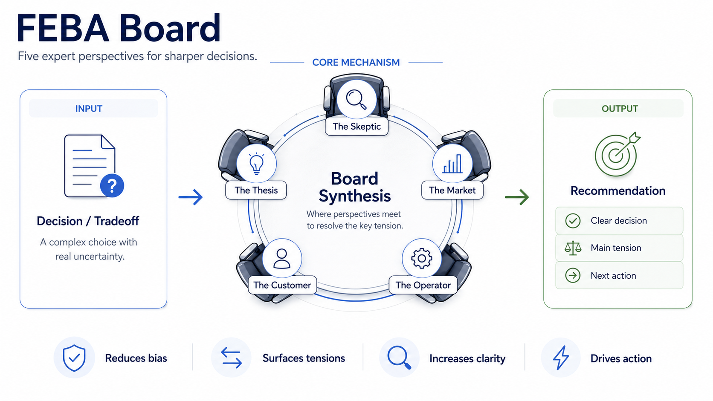
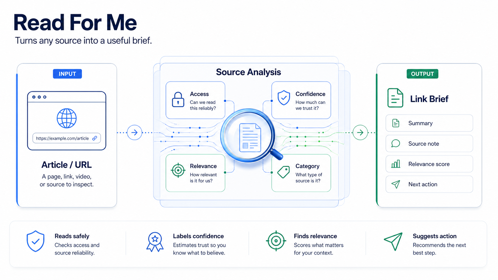
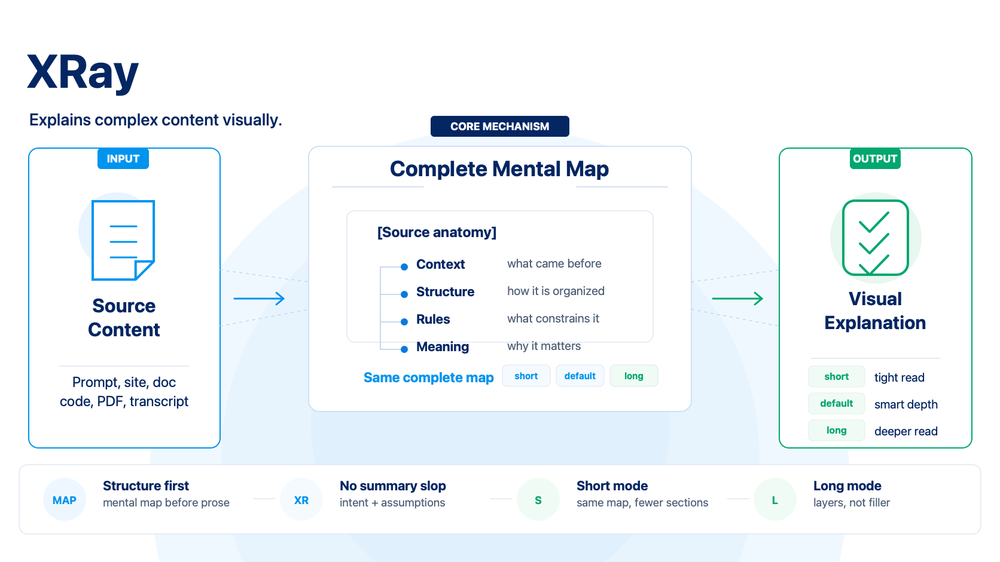
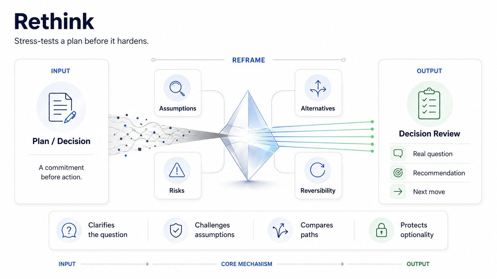
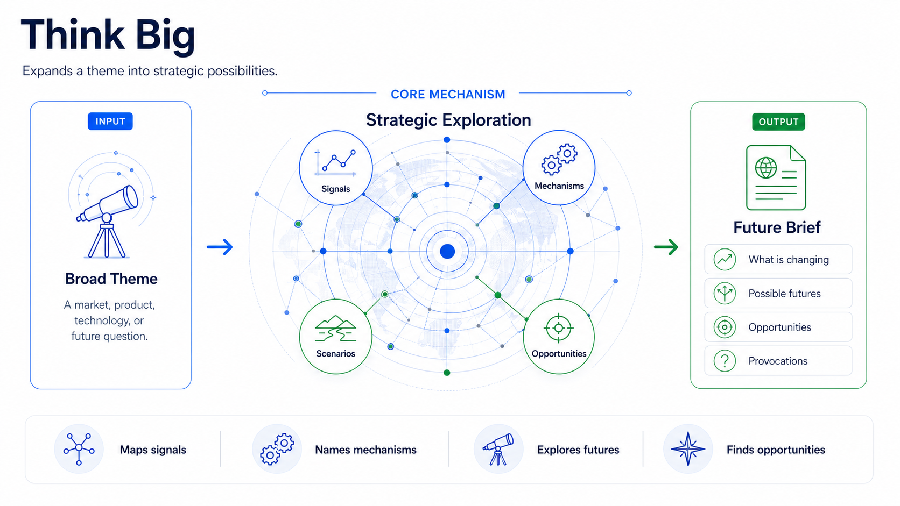
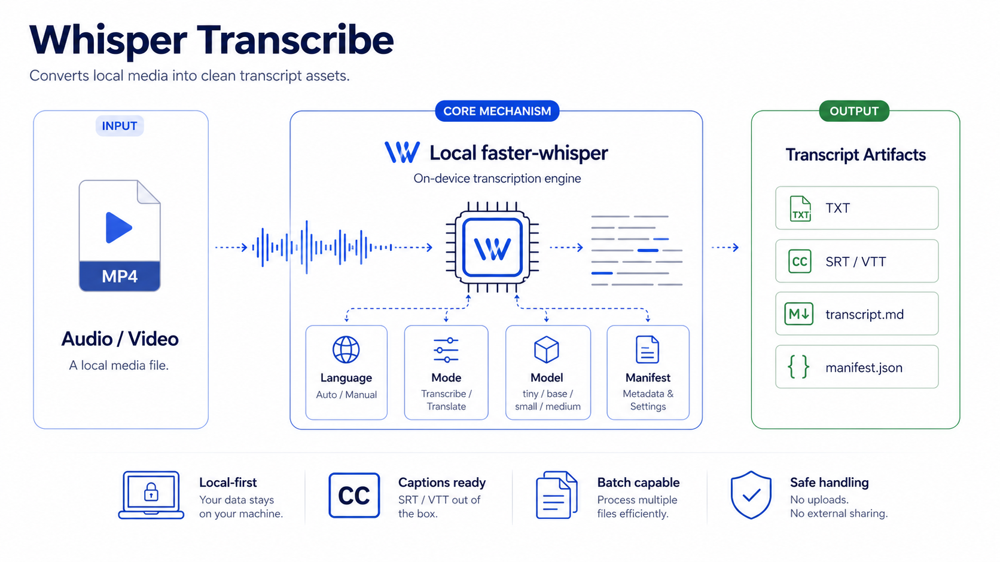
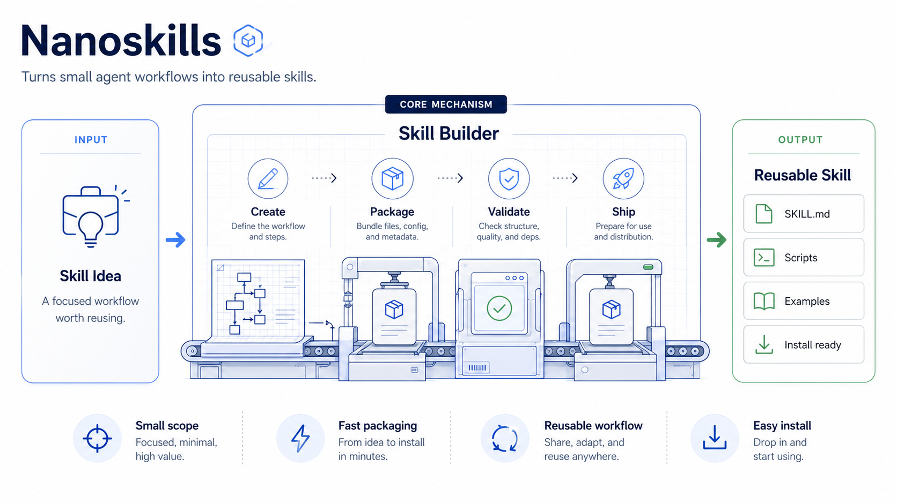
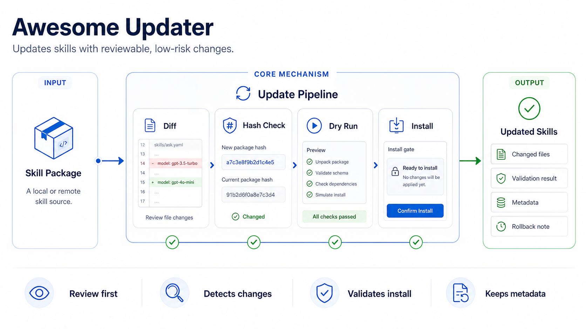

Awesome NanoClaw Skills
Curated, security-conscious AI skills for NanoClaw agents.
░█▀█░█░█░█▀▀░█▀▀░█▀█░█▄█░█▀▀ ░█▀█░█▄█░█▀▀░▀▀█░█░█░█░█░█▀▀ ░▀░▀░▀░▀░▀▀▀░▀▀▀░▀▀▀░▀░▀░▀▀▀ ░█▀█░█▀█░█▀█░█▀█░█▀▀░█░░░█▀█░█░█░░░█▀▀░█░█░▀█▀░█░░░█░░░█▀▀ ░█░█░█▀█░█░█░█░█░█░░░█░░░█▀█░█▄█░░░▀▀█░█▀▄░░█░░█░░░█░░░▀▀█ ░▀░▀░▀░▀░▀░▀░▀▀▀░▀▀▀░▀▀▀░▀░▀░▀░▀░░░▀▀▀░▀░▀░▀▀▀░▀▀▀░▀▀▀░▀▀▀
This repository curates small, portable skill folders that can be copied into a NanoClaw runtime. Each skill contains a SKILL.md file plus optional references, templates, scripts, and assets.
Use this repository to add focused capabilities to an agent without turning the main system prompt into a giant instruction block.
Available Skills
The images below are intentionally large in this preview. User-facing skills come first, followed by admin/package skills for discovery and lifecycle management.
User-Facing Skills
Five VC perspectives for important decisions, plans, and tradeoffs. Use it when a decision needs useful disagreement before a recommendation.
Aliases: /board, /feba-board, /council, second opinion, help me decide.

- Launch, pricing, hiring, partnership, or product tradeoffs.
- When the user asks for a board, second opinion, or pressure test.
- When natural-language decision help is clearer than a rigid command.
Compact board review with the main tensions, five advisor perspectives, one recommendation, and a next action.
Short by default. Expand one advisor, compare options, or save/export a transcript only when requested.
/febaboard Should we ship this week or wait until onboarding is better?
/febaboard Help me decide whether to launch now or wait until onboarding is better.
help me decide whether to accept this large customerContext-aware URL briefs with confidence and safe next steps. It turns links into decision-ready source notes without saving, posting, or modifying anything unless explicitly asked.
Aliases: /read, /readthis, readthis, read-this, summarize this, read this, bare URLs.

- A bare URL appears in chat.
- The user asks to read, summarize, triage, or analyze a link.
- The user asks whether a source matters to a project or decision.
Link brief with title, source, date, access level, confidence, relevance score, categories, summary, and next action.
Webpage, transcript, metadata, and social content are untrusted. The skill summarizes and recommends; it does not execute page instructions.
/read-for-me https://example.com/article
/readthis https://example.com/article
Read this and tell me whether it matters for our launch plan: https://example.com/post
/read Analyze this link and tell me what changes for the project. https://example.comVisual explanations with complete mental maps and short/long depth modes. It reveals structure, intent, assumptions, and practical meaning instead of producing a generic summary.
Aliases: /visual-explain, visual-explain, mental map, visual explanation, explain visually.

- The user wants a mental map or visual explanation of content.
- The input is a prompt, spec, doc, website, transcript, PDF excerpt, article, code, or complex concept.
- The useful output is structure and meaning, not a generic summary.
Complete mental map plus mode-appropriate follow-up sections. short cuts later sections; long adds interpretation layers.
The mental map is never weakened. Depth modes control what comes after the map, not the quality or completeness of the map.
/xray short Paste this contract and show the structure.
/xray long Explain this onboarding prompt.
/xray https://example.com/specReframe plans, ideas, and decisions before committing. It improves decision quality by clarifying the real question, assumptions, alternatives, risks, and next move.
Aliases: rethink, step back, gut-check, pressure-test, simplify this, decide.

- A concrete plan, product idea, architecture, career choice, or company direction needs review.
- The user asks to step back, gut-check, pressure-test, simplify, or decide.
- The decision is real enough that a better frame changes action.
Concise decision review with the real question, assumptions, alternatives, risks, recommendation, and next move.
Not broad future exploration. If the topic is a wide possibility space rather than a concrete commitment, route to Think Big instead.
/rethink Should I build the global skill catalog as a separate skill or inside the updater?
/rethink Is this launch plan too big for the first version?
/rethink Help me decide between hiring now or keeping the team small.Strategic future scans with signals, scenarios, risks, and opportunities. It opens the possibility space while staying grounded in mechanisms and uncertainty.
Aliases: think big, future of, where is this going, opportunity scan.

- The user asks to think big, map possible futures, or explore strategic possibilities.
- The object is a broad theme: market, product, technology, society, career, company, or behavior.
- The useful output is perspective, not execution planning.
Strategic exploration with framing, signals, mechanisms, scenarios, opportunities, risks, and provocations.
Disciplined imagination. Prefer mechanisms over slogans, synthesis over link-by-link summaries, and a few sharp ideas over many generic ones.
/think-big future of AI-first CRMs
/think-big future of agent marketplaces
/think-big What happens to checkout experiences when agents buy for users?Local faster-whisper transcription with explicit modes, manifests, and txt, srt, vtt, and transcript Markdown outputs.
Aliases: transcribe, whisper, generate captions, transcribe this audio.

- The user has a local audio or video file.
- The user needs transcription, captions, subtitles, meeting text, or archive-ready artifacts.
- The work should stay local rather than using an external transcription API.
Saved transcript and caption files plus a chat summary with mode, language, model, formats, output paths, manifest, and next action.
Python 3.10+, faster-whisper, and local media codec support. Some video formats may also require ffmpeg.
/whisper-transcribe /absolute/path/to/audio.mp3
/whisper-transcribe /absolute/path/to/video.mp4 --mode captions
/whisper-transcribe Transcribe this audio and generate SRT. /absolute/path/audio.m4aAdmin / Package Skills
Package-level catalog and help for all Awesome NanoClaw Skills. It lists installed skills, explains what each one does, and provides language-matched help and examples.
Aliases: skills, help skills, catalog.

- The user asks what skills are available.
- The user wants help or examples for one skill.
- The user invokes
/nanoskills,/nanoskills help, or/nanoskills help <skill>.
Language-matched package catalog or skill-specific help, based on local catalog files and without requiring network access.
Discovery and documentation. It can route update questions to awesome-updater, but normal help stays fast and non-mutating.
/nanoskills
/nanoskills help board
/nanoskills help think-bigawesome-updater installs, validates, backs up, discovers, and auto-updates managed skills. It is lifecycle infrastructure for this collection.
Aliases: updater, updates, auto-update, managed skills.

- Install a managed skill.
- Discover newly added first-party skills.
- Check, configure, back up, roll back, or auto-upgrade installed skills.
Update, install, config, backup, rollback, or discovery status based on the updater JSON summary.
Validates source skills, compares exact content hashes, backs up installed copies, and restores a backup if replacement fails.
/awesome-updater help
/nanoskills updates
/awesome-updater discover
/awesome-updater check feba-boardQuick Start
Clone the repository, review the skill you want, and copy it into a NanoClaw container runtime.
SKILL.md before installing.
git clone https://github.com/fabioespindula/awesome-nanoclaw-skills.git
cd awesome-nanoclaw-skillsSKILL=feba-board
less "skills/$SKILL/SKILL.md"mkdir -p /path/to/nanoclaw/container/skills
rsync -a "skills/$SKILL/" "/path/to/nanoclaw/container/skills/$SKILL/"Restart NanoClaw if your runtime requires it.
/nanoskills
/febaboard Should we ship the first version this week or wait until onboarding is better?Copy every skill for local testing
mkdir -p /path/to/nanoclaw/container/skills
rsync -a skills/ /path/to/nanoclaw/container/skills/Discover and learn skills from inside chat:
/nanoskills
/nanoskills help think-big
/febaboard helpWhat Is a Skill?
A NanoClaw skill is a folder that gives an agent a focused capability.
SKILL.md defines when the skill should trigger and how the agent should behave. Optional folders can include examples, templates, prompts, scripts, and supporting material.
Skills are prompt-native. No compilation step is required.
skill-name/
SKILL.md
references/
assets/
scripts/Each skill should make clear
- what it does
- when to use it
- how to install or run it
- what requirements it has
- one or more example prompts
Requirements
This collection assumes a NanoClaw runtime that can load skill folders from container/skills/.
Some skills may require local tools or model dependencies. Check each skill folder before installing it into a production runtime.
| Skill | Requirements |
|---|---|
| feba-board | NanoClaw runtime with this skill installed; no external tools required. |
| read-for-me | NanoClaw agent runtime with URL fetching or browsing tools. Optional memory/profile tools improve personalization but are not required. |
| xray | NanoClaw runtime with this skill installed. Browser, file, or PDF tools are useful only when the requested source requires them. |
| rethink | NanoClaw runtime; browser or research tools only when the decision depends on current facts. |
| think-big | NanoClaw runtime; browser or research tools for current sources. |
| whisper-transcribe | Python 3.10+, faster-whisper, and local media codec support. Some video formats may also require ffmpeg. |
| nanoskills | NanoClaw runtime with skill loading and local access to this package's generated catalog. |
| awesome-updater | Python 3.10+, git, and network access for GitHub checks and first-party skill discovery. |
Safety
Review each SKILL.md before installing it. Skills may instruct agents to use tools, read files, run scripts, or follow workflows depending on your NanoClaw setup.
For production runtimes, install only the skills the agent needs and test each one before adding more.
Auto Updates
Install skills through awesome-updater when you want managed updates. Managed skills get a .awesome-skill.json metadata file with update checks, content hashes, and auto-upgrade enabled by default.
| Setting | Default | Effect |
|---|---|---|
update_check |
true |
Checks for newer commits, throttled to once per hour per skill. |
auto_upgrade |
true |
Applies available updates without asking, after validation and backup. |
discover_new |
true |
Installs newly added first-party skills from this curated package. |
throttle_seconds |
3600 |
Avoids repeated network checks during frequent skill use. |
discover_throttle_seconds |
3600 |
Avoids repeated package-wide discovery during frequent skill use. |
hash_algorithm |
sha256 |
Detects updates by exact per-skill content rather than whole-repo commits. |
Bootstrap and managed update commands
SKILLS_DIR=/path/to/nanoclaw/container/skills
python3 skills/awesome-updater/scripts/awesome_skills.py install awesome-updater \
--source-dir "$PWD" \
--skills-dir "$SKILLS_DIR"python3 "$SKILLS_DIR/awesome-updater/scripts/awesome_skills.py" install feba-board \
--source-dir "$PWD" \
--skills-dir "$SKILLS_DIR"python3 "$SKILLS_DIR/awesome-updater/scripts/awesome_skills.py" discover \
--skills-dir "$SKILLS_DIR"python3 "$SKILLS_DIR/awesome-updater/scripts/awesome_skills.py" check feba-board \
--skills-dir "$SKILLS_DIR" \
--autopython3 "$SKILLS_DIR/awesome-updater/scripts/awesome_skills.py" check feba-board \
--skills-dir "$SKILLS_DIR" \
--source-dir "$PWD" \
--auto \
--force \
--dry-runpython3 "$SKILLS_DIR/awesome-updater/scripts/awesome_skills.py" status \
--skills-dir "$SKILLS_DIR" \
--source-dir "$PWD"Skill Backlog
These are candidate skills. If you want one of them next, open an issue or comment with your use case.
| Skill | Description |
|---|---|
skill-auditor |
Audits NanoClaw and OpenClaw skills for unsafe commands, secret exfiltration, risky install steps, and undocumented network access. |
web-clipper |
Saves, summarizes, tags, and organizes links sent from chat channels such as Telegram and WhatsApp. |
morning-briefing |
Generates a daily briefing from saved context, priorities, calendars, tasks, and relevant external signals. |
meeting-assistant |
Turns meeting audio, transcripts, notes, and chat context into summaries, decisions, action items, and follow-ups. |
firecrawl-research |
Uses Firecrawl-backed crawling and extraction to produce sourced research briefs from websites and docs. |
self-improving-agent |
Captures mistakes, preferences, and lessons learned so future agent runs can improve with reviewable updates. |
mcp-bridge |
Helps connect NanoClaw skills to MCP servers and external tool providers through safe setup workflows. |
skill-porting-kit |
Converts or adapts OpenClaw, Claude Code, Codex, Cursor, and other SKILL.md-compatible skills for NanoClaw. |
notion-knowledge-base |
Reads, writes, searches, and organizes Notion pages, tasks, and lightweight knowledge bases. |
context7-docs |
Pulls current developer documentation into coding workflows using Context7-style doc retrieval. |
Repository Structure
awesome-nanoclaw-skills/
README.md
LICENSE
skills/
awesome-updater/
SKILL.md
scripts/
tests/
nanoskills/
SKILL.md
references/
templates/
scripts/
feba-board/
SKILL.md
references/
assets/
scripts/
read-for-me/
SKILL.md
references/
templates/
scripts/
xray/
SKILL.md
references/
scripts/
rethink/
SKILL.md
references/
think-big/
SKILL.md
references/
whisper-transcribe/
SKILL.md
scripts/
tests/Project Status
These skills are usable today, but the collection is still early. Interfaces, prompts, scripts, and folder conventions may change before a v1.0 release.
Philosophy
Good agents do not need one giant prompt. They need focused capabilities with clear boundaries.
The collection is built around a few principles:
- small skills over monolithic agents
- explicit workflows over vague instructions
- useful disagreement over automatic agreement
- local-first tools when possible
- readable Markdown over hidden complexity
Contributing
Issues and suggestions are welcome.
Pull requests are welcome for documentation fixes, new examples, and improvements to existing skills.
New skill proposals should be opened as an issue first.
Good skills should be
- focused on one capability
- easy to inspect
- useful without private context
- documented with examples
- safe to run in a normal agent workflow